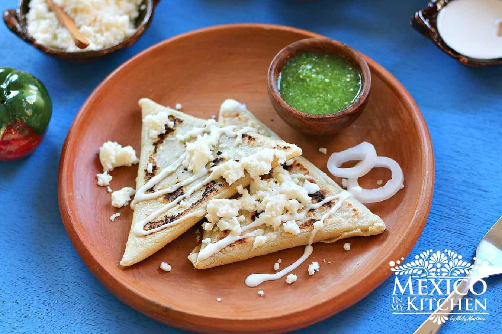

Tetelas Oaxaca
Home
Milanesa
Tetelas
Michelada

Description
Tetelas are tasty triangle-shaped corn masa treats that are stuffed with black beans and cooked on a griddle. They are really easy to make for breakfast, lunch or dinner. At home, we can't even wait for them to get out of the griddle before we start eating them! That's the best way to eat them, by the way: straight off the griddle!
You will find Tetelas in the Mixtec region of the State of Oaxaca. The Mixtec region is located in the north-central part of the state and is one of the 8 regions of the state of Oaxaca. Tetelas are also found in the State of Puebla, particularly in the areas bordering the state of Oaxaca. And they are not also called Tetelas, some regions on both states will also call them "Memelas".
Ingredients
- 2 Cups of Masa-Harina
- 1.25 cups of warm water
- 1.33 cups of refried black beans
- 0.75 cups Mexican Cream
- 0.75 cups Queso Fresco crumble
- Raw Green Salsa or Red Spicy Salsa
Steps
- Mix the masa-harina with the water and knead well to form a smooth dough. If the dough feels a little too dry, add one or two tablespoons of water little by little.
- Divide the dough into 12 equal-sized balls, and cover them with a wet kitchen napkin. I usually grab a paper towel, get it wet under the faucet, and cover the dough with it (corn Masa dough tends to dry easily).
- Heat your griddle over a medium-high heat.
- Place one of the masa balls between the 2 sheets of plastic and gently press on your tortilla press (or under the glass pie dish). The tortilla should measure about 6 inches in diameter and be somewhat thin.
- Remove the top plastic from the tortillas and spread about 1 tablespoon of the beans on. With the help of the plastic sheet still on the bottom, fold over one side of the tortilla, then the second side, and finally flip over the third remaining side to close the tetela. It will look like a triangle, as shown in the picture.
- Remove the formed tetela from the plastic and place on the hot griddle. Cook for about 1 minute, then flip to cook for 2-3 minutes on the other side, and finally flip it again to cook for about one more minute. Remove the tetela when you see that it is completely cooked and has some brown spots. Place in a basket with a kitchen napkin to keep warm while you finish the rest of the tetelas. Continue this process with the rest of the dough.
- To serve, top the Tetelas with cream and cheese and add the salsa. You can also open one side with the help of a knife and add the cream and cheese on the inside